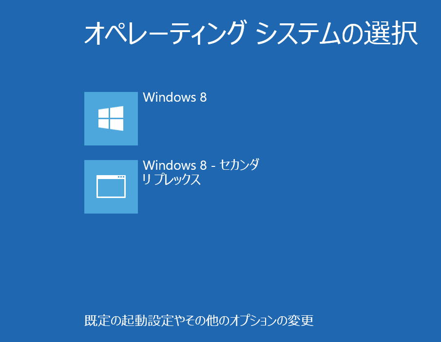

| TOP | weblog | TIPS | Works | リンク | 掲示板 |
| 2012-11-22 Windows8でCドライブをミラーすると起動画面が変わります 随分前からわかってたんですけどハードコピーとれないって思ってたのでほっといていました。 ですが、Windows8はログイン前でもハードコピー取れるんですね。 Cドライブをミラーすると下の画面になります。  セカンダリを選択するとどうなるかは実験してません。 ミラー外れたり、なんか面倒な事起きそうなのでやめときます。 （関連記事） 2012-10-29 ハードディスクの障害対策につてい考えてみた |